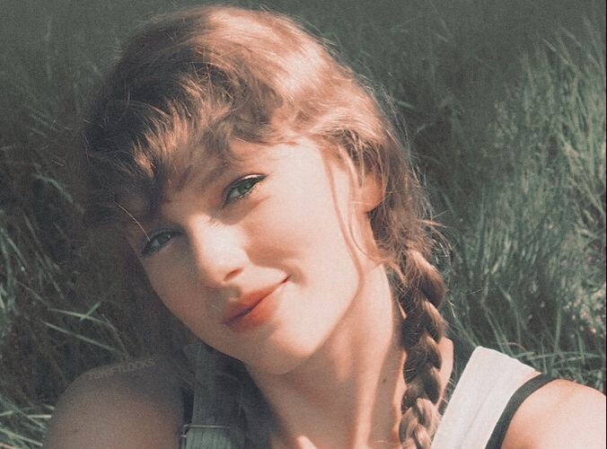
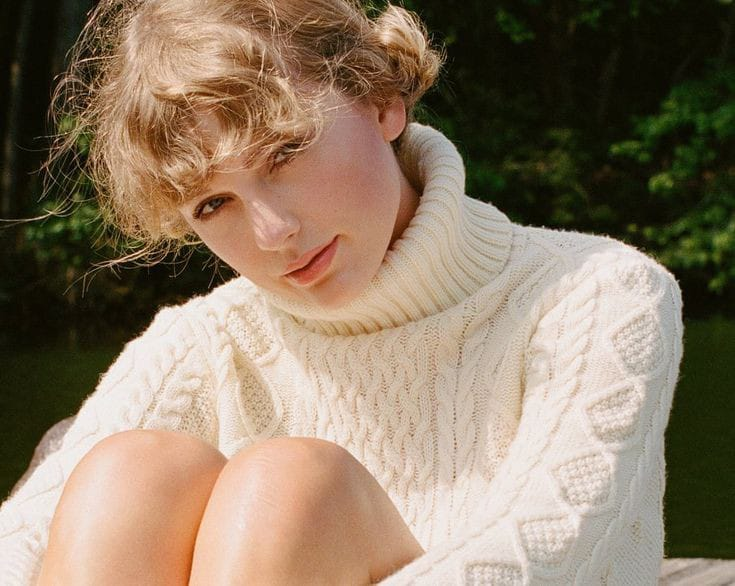

-About Taylor Swift-

Nama : Taylor Swift Celestine
Minat : Dunia tarik suara
Bakat : Bernyanyi dan menulis lagu
Hobi : memasak dan memanggang, hiking, ski air, bola voli, membuat kerajinan tangan, membuat selai, melukis wajah, bermain tangkap dengan Meredith (kucing saya), memotret, memikirkan hadiah untuk diberikan kepada orang-orang, dan pergi ke kedai kopi.

Idola/ Role Model: Najwa Shihab
Alasan: Karena keberaniannya dalam mengemukakan pendapat, kegemarannya dalam menularkan minat baca dan sosoknya yang menginspirasi generasi muda.
Motivasi: Never believe anyone who tells you that you don’t deserve what you want.